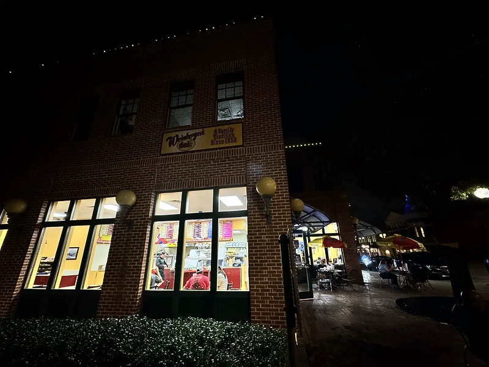
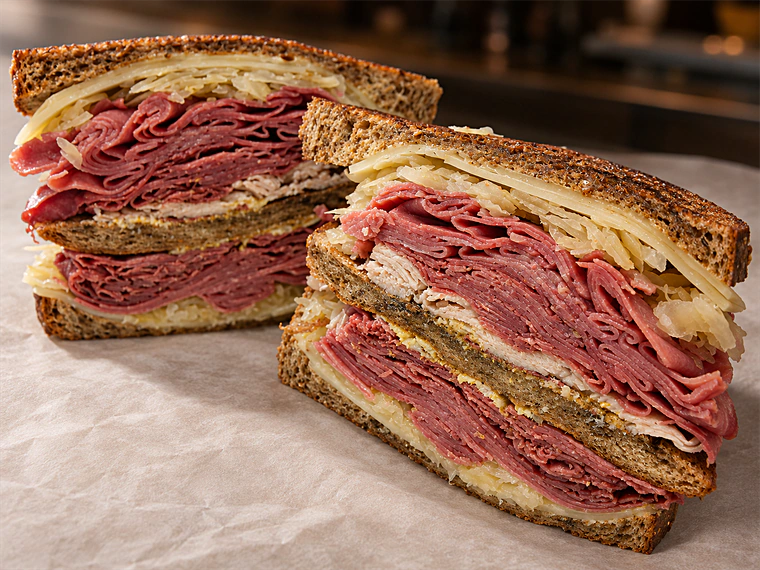
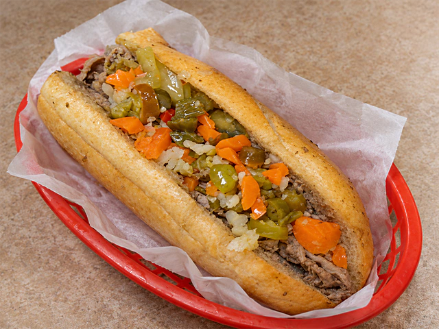

Order your usual
Change the bread, choose the toast, remove an ingredient and name the sandwich. Open My Usuals and edit it without changing your bag.
Customize the Reuben ↗A website and two ordering apps built around how Weinberger’s makes a sandwich. Try an exact order, then see what you can change yourself.

First year
Website, iPhone, Android, hosting, maintenance and agreed changes through 12 months after the approved website launch. Android carries no additional development fee.
Change the bread, choose the toast, remove an ingredient and name the sandwich. Open My Usuals and edit it without changing your bag.
Customize the Reuben ↗Use the owner login on your phone or computer. Open a draft, change an item or photo and preview it. You choose when to publish.
Open Site Studio ↗Explore the ordering layout in your browser. The proposal includes physical-phone testing and releases in both stores.
Use 12 months of restaurant-paid Owner subscription and platform order fees, after credits. Leave out card processing, tax, couriers, hardware, store accounts, customer-paid fees and overlapping provider costs.
We agree on the invoice total before a deposit. The first year is capped at $2,500. Optional care from month 13 is capped at $149 a month.
Start with a supported evaluation and one agreed review-scale change, with no deposit or deadline. Keep current ordering in service until the pilot and rollback plan are accepted.
01
START WITH THE WORK, NOT THE PITCH
Open each path. The point is not that a screen looks newer. The point is that a customer can move through a 137-entry deli catalogue, understand the choices, and state a complicated order clearly.

TRY 01OPEN A SIGNATURE SANDWICH

TRY 02START WITH A CHICAGO CLASSIC
START FROM NOTHING
GET TO THE DELI
One honest limitation: the menu’s ingredient filters use published descriptions; they do not certify allergies or dietary suitability. Customers are directed to speak with the deli about allergies.
02
WHAT IS DIFFERENT
The restaurant’s public pages and app-store listings reviewed November 9, 2026 already advertise ordering, rewards, reorder, tracking, and live iPhone and Android apps supplied through Owner. Those basics are not the sales pitch. The proposed difference is the menu workflow and the operational control behind it; whether that difference is worth switching must be proved in the pilot.
Combine ingredients to include, ingredients to leave out, a maximum starting price, category, and sorting. A large menu becomes something a customer can reason through.
CUSTOMER RESULTThe closest choices remain visible without repeatedly opening unrelated items.
Put two or three sandwiches side by side with descriptions, starting prices, direct choose buttons, and a shareable comparison link.
CUSTOMER RESULTThe differences stay in view together instead of depending on memory.
Search structured additions, remove listed ingredients, choose bread and toasting where applicable, and review an editable choice summary before checkout.
OPERATING RESULT TO TESTThe proposed ticket records structured selections. Modifier accuracy still has to be proven with Dan’s staff and equipment.
Managers can prepare menu changes in a draft, validate them, publish an approved version, restore a prior version, control availability and preparation time, and review exceptions.
OWNER RESULTThe proposed source, restaurant-controlled accounts, and approval gates keep menu and operating decisions with Weinberger’s.
03
WHAT EXISTS BEHIND THE SCREENS
The customer website, native iPhone project, native Android project, PostgreSQL ordering service, and kitchen and manager tools use the same catalogue and server-authoritative order contract.
Discovery, comparison, detailed menu-defined customization, My Usuals, pickup windows, group lunch, catering requests, quote review, checkout handoff, and private order recovery.
SwiftUI source for discovery, exact saved sandwiches, pickup selection, checkout, recovery, ready alerts, and the deli story. Group and catering requests open the connected web flow.
Kotlin Compose project with test builds, exact saved sandwiches, pickup selection, checkout, recovery, ready alerts, and the deli story. Group and catering requests open the connected web flow.
Authoritative prices and tax, idempotent checkout and refunds, verified payment events, staff roles, audit history, incidents, monitoring, and backup and restore procedures.
Paid-order queue, preparation states, stock and hours controls, refunds, menu publishing, timing automation, catering quotes, owner insights, and payment-exception review.
Stripe Checkout, email, APNs, Firebase push, optional Twilio SMS, PrintNode, and signed-webhook adapter code exists. The selected merchant service, actual POS or kitchen destination, and restaurant equipment still must be identified, connected, and accepted.
BUILT AND RECORDED
STILL REQUIRED
ADDED TO THE CUSTOMER AND OWNER WORKFLOW
A named sandwich keeps its bread, meat, cheese, toppings, removals, toasting, and instructions. Adding it again restores those choices; connected checkout is authoritative for current prices and availability.
Open My Usuals ↗Off uses the staff-set time. Suggest shows a recommendation. Automatic adjusts new promises using configured capacity and queued work. Advanced settings stay tucked away; a temporary rush delay is easy to reach.
Walk-in and outside-service demand needs an agreed allowance until it is connected. Staff still decide when food is ready.
An organizer shares a private invitation. Each person names and customizes their order; the organizer reviews and pays once. Names carry into the kitchen information.
Open group lunch ↗Collect the date, headcount, budget, requested food, and fulfillment details. A manager sets the quote and deposit or full payment. A paid deposit is kept separate from an immediate pickup ticket.
Open catering requests ↗Customers can opt into configured email, app, or SMS alerts after the kitchen marks an order ready. The owner overview shows paid sales after refunds, order value, popular items, recorded preparation times, and problems needing attention.
Figures cover this service, not unseen sales in the current POS.
Dan’s portrait, family history, approach to making sandwiches, dated recognition with sources, and the restaurant’s own video are incorporated into the existing yellow and maroon design.
Read the story and recognition ↗These connected workflows are implemented and exercised locally. Public transactions remain closed until the approved restaurant service is deployed. Push and SMS delivery still require authorized service configuration and actual-device acceptance.
Boundary: recorded connected tests used isolated payment and kitchen fixtures. No card was charged, no restaurant ticket was printed, and no claim of production readiness or customer preference follows from those local checks.
04
WHY PAY CHRIS TO DO IT
The fee is not for a picture of a new website. It is for converting inspectable work into an accepted system for this deli, releasing both apps, training the people who use it, and leaving Weinberger’s with the source and operating instructions.
Deploy production services, connect the approved merchant and kitchen route, map every approved price and modifier, and configure individual staff access.
Run the controlled transaction, duplicate and failure cases, ticket accuracy, status, refund, backup restore, accessibility work, staff pilot, and return-to-current-system procedure.
Complete production connections, device and accessibility checks, signing, store setup, testing, listing materials, submission, and corrections for implementation defects.
At website/backend acceptance, before the website/backend 20% payment, deliver owner operating access, the custom source, deployment and recovery instructions, approved configuration, export procedures, and the account-ownership record. Dan can operate and recover the accepted web system while app-store review remains pending.
CONTROL AND OWNERSHIP
Third-party components keep their own licenses. If monthly care ends, Weinberger’s retains the delivered custom work and accounts and assumes future operation and maintenance.
05
WHAT IT TAKES TO SWITCH
The current provider stays in service while the replacement is connected and tested. Public traffic moves only after the customer, kitchen, payment, refund, recovery, app, and continuity paths are accepted.
Review the current contract and invoice, domain, processor, POS, printer or kitchen screen, Apple and Google accounts, exports, rewards obligations, supported devices, and both-app release path. Agree scope, price, and acceptance checks in writing.
Dan or a designated manager approves ingredients, additions, substitutions, omissions, toasting, prices, tax, pickup rules, customer-facing hours, refund policy, and staff roles. Unresolved combinations stay unavailable for checkout.
Deploy the backend, connect the approved processor and kitchen route, configure staff accounts, finish the iPhone and Android release builds, test supported physical devices, and rehearse manager and kitchen work.
A controlled low-value order charges once, reaches the right kitchen destination once, retains every modifier, updates status, reconciles, and refunds correctly. Failure, availability, accessibility, backup, and rollback cases are also exercised.
Dan chooses the date. In-flight orders finish in their original system. Old app versions, refunds, exports, rewards, listing continuity, and the rollback window are resolved before the current provider is cancelled.
After account access, approved menu data, supported-device decisions, equipment and integration review, and written scope, the technical review establishes a written private-pilot and two-app release schedule. Apple and Google control public review timing, so no public app-store date is promised in advance.
THE PROPOSED OFFER
Maximum first-year price. The actual price is the lower of $2,500 or 50% of Weinberger’s verified annual Owner restaurant platform charges. It covers one Grapevine location, pickup, the approved menu, one supported payment path, the website, native iPhone and Android apps, release work, staff workflow, and browser kitchen screen.
Due after the free technical review and both sides agree to the verified-bill calculation, written price, written scope, and written acceptance checks.
Due after the production candidate, physical-device builds, and staff pilot pass the written checks.
Due after the approved website/backend launch, payment, kitchen, refund and recovery checks, and the agreed handoff.
Due only after both apps are publicly available in the Apple App Store and Google Play and every written launch check has passed. Apple and Google control review timing.
INCLUDED THROUGH 12 MONTHS AFTER DAN-APPROVED WEBSITE LAUNCH
Build, launch, hosting, maintenance, and agreed customization are included. There is no hourly cap or per-edit labor fee for agreed functionality. The website/backend also receives 90 days of launch care; each app receives its own 90 days from its approved production launch, even if that extends beyond year one.
OPTIONAL CARE BEGINNING IN MONTH 13
The price is the lower of $149 per month or one twenty-fourth of the verified annual platform bill. It is month to month with no automatic enrollment. New capabilities or unsupported integrations require a separate written agreement.
THE BILL BASELINE IS 12 MONTHS OF RESTAURANT-PAID SUBSCRIPTION AND PLATFORM/ORDER FEES, NET OF CREDITS. PROCESSING, TAXES, COURIERS, HARDWARE, APP-STORE ACCOUNTS, CUSTOMER-PAID FEES, AND PROVIDER OVERLAP ARE SEPARATE. NO CHRIS PERCENTAGE OF ORDERS OR ADDED GUEST SUPPORT FEE.
06
A DEFINED SERVICE AT A DEFINED PRICE
Configuration and mapping to an existing documented POS interface may be included after the free review. Credentials alone do not make an undocumented or unsupported POS compatible.
Any required replacement outside the stated scope receives an explicit written scope and price before work begins. Existing services remain in place until their disposition is agreed.
Pick one change you want to see. Chris will make the agreed change for you to review. If it fits, the next conversation covers your invoice, menu, equipment and what the staff pilot must prove.